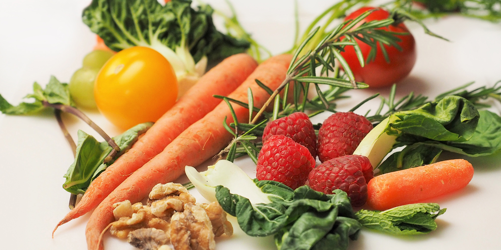
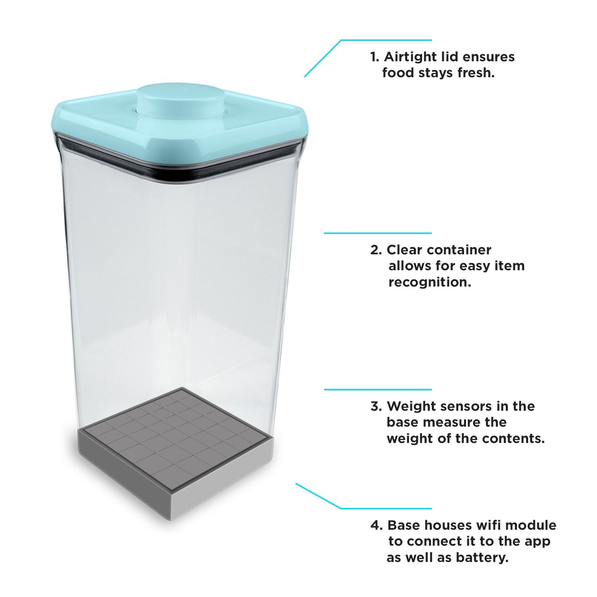

Project Statement
Around 14.6 billion dollars worth of food is thrown out of Canadian households annually. When combined with the fact that the average Canadian spends around 15% of their total income on groceries, we can see that there is a serious problem when it comes to how we keep track of the food we have in our kitchens.
The causes range from simple things like forgetting what's in the fridge until the food has spoiled to never finding a use for the food we purchase. Then there is the food that we always eat and the problem becomes how can we make sure we never run out of our favourite foods when we need them the most. The purpose of my project is to reduce the amount of food we waste by visually confronting users of what they have in their kitchens as well always ensuring that our kitchens stay stocked with the food we eat the most.

Ideation
While conducting primary research for my project I spoke with two different groups of potential users. The first person I interviewed to learn about the needs they were seeking while dealing with their food was a young professional woman that had just begun working full time. She was trying to save money by cooking at home as much as possible. A problem she had was trying to keep track of all of her food. She would buy a lot of groceries and then forget about certain items that had gone to the back of her fridge or pantry. This would cause some of her food to expire before she had a chance to use it. She explained that she threw out food almost once a week and how this was a major problem for her. Another problem that she had expressed was that while doing groceries, she would often forget which items she needed to buy and which ones she already had enough of at home.
The second interview that helped validate my project was of a baker working at a grocery store. She had explained that one of the most problematic parts of her job was weighing the amount of ingredients they had in inventory. She explained that while taking inventory, they would have to move items around a lot in order to place them on scales to get an accurate count of the quantity. She also explained that this task was time consuming. This user research validates my project statement by highlighting the primary problem users have when it comes to keeping track of their food. Users want to easily know when their food will expire and how much of it they have.
Users
The users for my project are people that want to have up to date information about the food in their kitchens. They are users that forget when the food they have is going to expire and often throw away unused food that has spoiled. The users are also people that want to know the up to date quantitates of the food that they have to ensure that they always have enough to eat. Users that go grocery shopping and forget about what they have at home are also part of the target audience because they don't want to purchase items that they already have and they want to make sure that they get everything that they need. My Users want to save money by throwing away less food and they want to know if they have the food they need at all times.
Persona 1
Jane Ralle - Busy Working Mother
PERSONAL PROFILE
Jane is a busy mother that cares about providing the best meals for her family. She is always buying fresh whole foods to cook with but due to her hectic work schedule she often has to throw out lots of it weekly because she just can’t keep track of all of her stuff she has and when they will expire. She tries to cook as much as possible to save her family money, but she finds herself throwing out more food and wasting money more than she would like.
Persona 2
Steve Lemi - Frequent Host
PERSONAL PROFILE
Steve is a 30 year old self-employed electrician and a big sports fan that is always willing to spend time with his friends and catch the game. He prides himself in having the best living room setup for watching sports and playing video games so he is often playing the role of the host for his buddies. He spends many days working long shifts back to back and sometimes doesn't come home for a few days at a time.
Persona 3
Linda Toursa - Concerned Daughter
PERSONAL PROFILE
Linda is a 56 year old mother of two and principal at a high school. She is the youngest of four children, and she has always been the baby of the family. Last month her father Dan passed away from an illness brought upon by a poor diet. Now Linda feels like she has to do as much as possible to take care of her mother Tania by ensuring she has enough wholesome food in her house to maintain her good health. She is always checking up on Tania to make sure she has everything she needs but Tania is stubborn and wants to maintain as much of her independence as possible.
UI/UX
Kitchen Count Smart Containers
Users fill Kitchen Count containers with their food items. Each container houses weight sensors, a Wi-Fi module and a battery that will allow for updated information to be sent straight to the Kitchen Count application on a user's device. The focus will be on only the food items that users view as a necessity in their household. From their users can expand their storage collection to create a more comprehensive inventory of all of their items.

The containers would come in a variety of different shapes and sizes in order to store various food items in the fridge, freezer and pantry.
Specialized containers could also be created to house more specific items such as beverages and items that could be stored without being completely sealed
Onboarding
Users can use their phone camera as a barcode scanner to quickly add items to their list of food. They can also add the information for each item manually into the entry fields.
The app uses the name of the item, the food category, the expiration date and the weight of the item to present the user with various ways of filtering and sorting through their list of food. After adding the information for an item, users will then select which container that item is stored in to pair the information from the container with the application.
After the item has been added to the user's inventory, users will be able to view the status of their item. This includes the quanitity remaining based on weight and the expiration date.
Navigation
Once users have filled their list with the food they have paired to their smart
containers, they are then able to view their items in a variety of different ways.
They can go to the top navigational menu and view all of their food or food
stored in specific places within their kitchen. The top navigation menu drops
down to reveal the option to view items in their fridge, freezer, pantry or all of
their food. Pressing each option allows users to quickly see the contents of a
particular part of their kitchen.
Features
While viewing the list of food items they have, users are then able to select
from 7 different food categories to filter their list of items. This allows them
to quickly see what types of food they have based on a category such as meat,
vegetables, or fruit. On top of this, users will then be able to sort the food they
have alphabetically, by expiration date or by the amount remaining in a smart
container based on weight.
For every food item in the list, there is a picture that users can add to help with
item identification while browsing. There is also the addition coloured quantity
bar to quickly convey the amount remaining for a specific item. When the bar
is green, it indicates that the food item is almost full or entirely full. When the
bar is showing red it indicates that an item is almost out. Above this there is
the written indication of when the food will expire. Visual notifications will also
appear onscreen to present the user with useful information regarding the
expiration of an item or when the amount is low.
Kitchen Count from simon madadi on Vimeo.